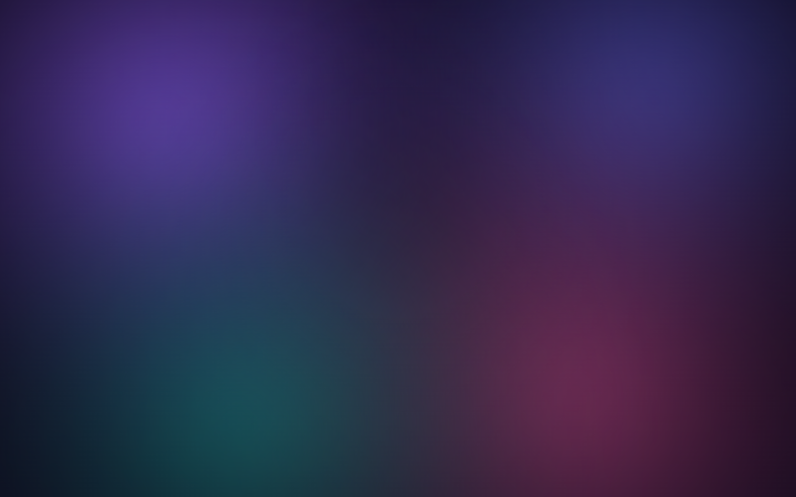
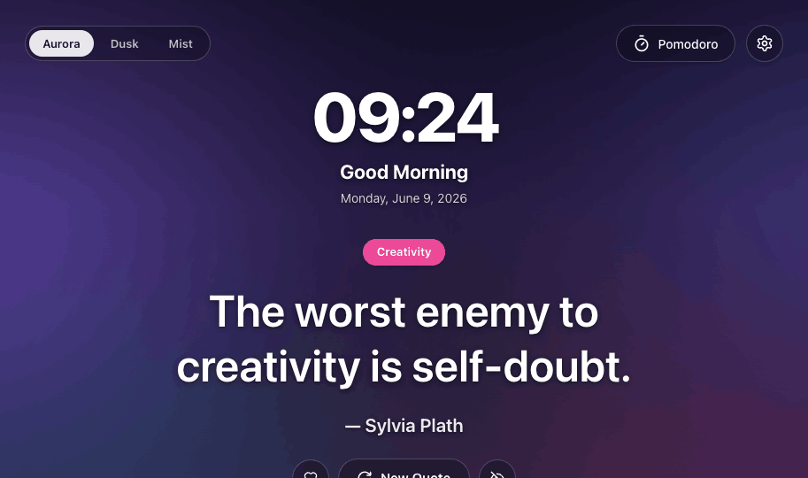
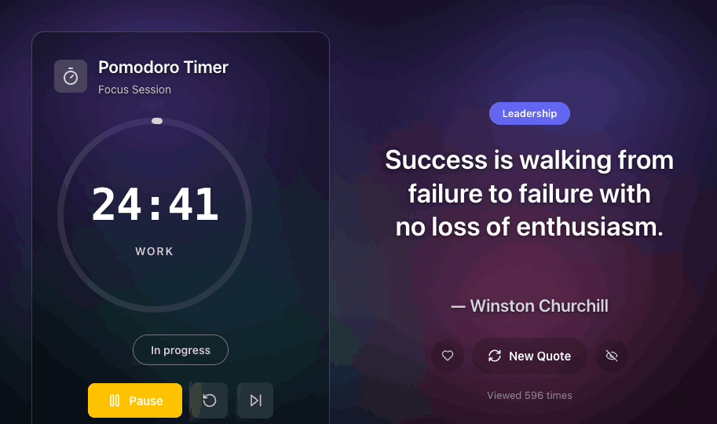
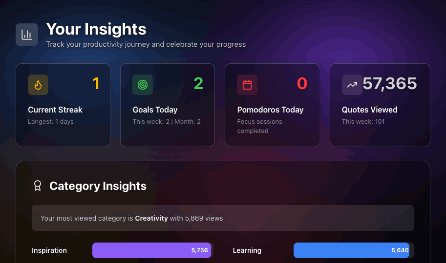
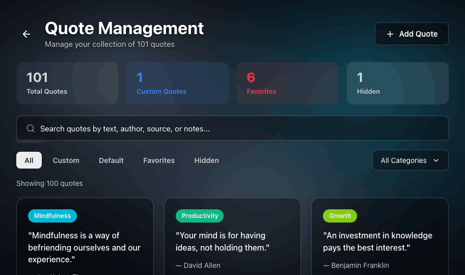

Cuewise meets you on every new tab with a hand-picked quote, your focus for the day, and a calm Pomodoro timer. Wisdom, intention, and momentum — without the overwhelm.

Calm tools, quietly powerful
No overwhelming task lists. No artificial deadlines. Just the few things that help you focus — beautifully arranged on every new tab.
A hand-picked quote on every tab, sorted into ten life categories — from creativity to resilience. Favorite the ones that land.
Capture what matters most in seconds and watch your progress fill as the day unfolds. Momentum you can actually see.
Focus for 25 minutes, then breathe for 5. A calm, full-screen timer that keeps your rhythm without the noise.
Streaks, goals completed and the categories you return to most — gentle stats that celebrate progress, never shame it.
Stay on top of what matters with gentle, repeatable nudges — overdue and upcoming, always one glance away.
Purple, Forest, Rose, or this signature Glass mode — frosted cards over a fresh daily photo. Make every tab yours.
A closer look
Every screen is built around the same idea: surface what matters, hide what doesn't, and get out of your way.
Start a session and the whole tab quiets down to a single ring counting your focus. Pair it with a quote for the mindset you need right now.

See your current streak, goals completed and the categories of wisdom you return to most. Encouraging by design — these numbers cheer you on.

Browse, search and filter a hundred-plus quotes — or add your own. Favorite the keepers, hide the rest, and Cuewise learns what resonates.

Up and running in 2 minutes
Install Cuewise free from the Chrome Web Store. No account, no signup — it just works on your very next tab.
Pick a theme — Purple, Forest, Rose or Glass — choose your quote categories, and set the density that feels right.
That's it. Every new tab now greets you with wisdom, your focus, and a quiet nudge toward what matters.
Join the calm side of productivity. Free forever, private by design, and ready in two minutes.
Works on Chrome and Chromium browsers · No tracking · All data stays on your device